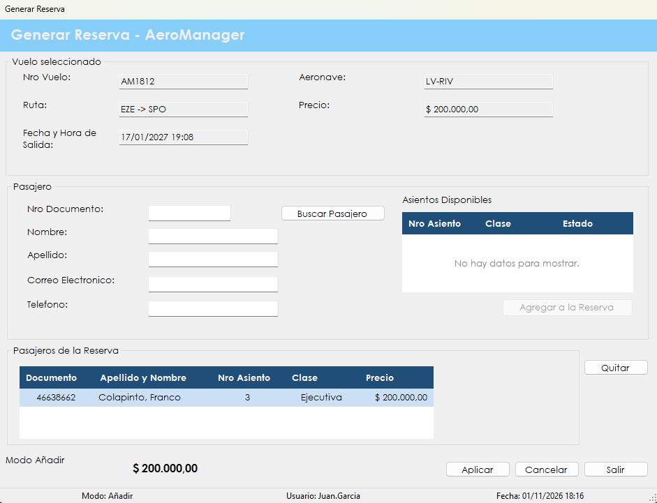
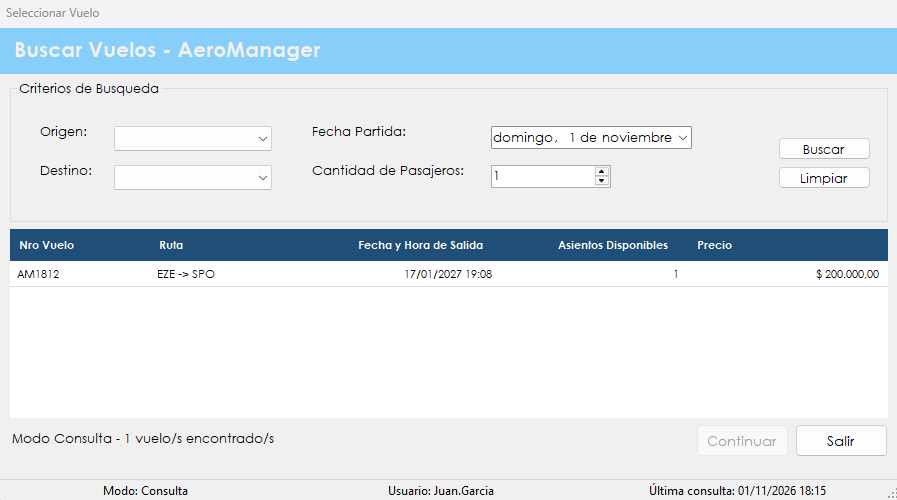
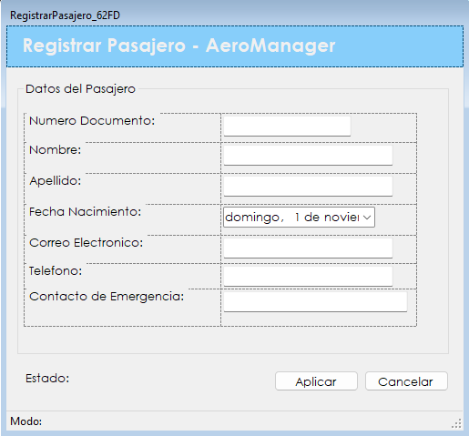

Es el primer paso de la venta: se elige el vuelo, se identifica a cada pasajero y se le asigna un asiento. El resultado es una reserva pendiente de pago.
Una reserva asegura los asientos de uno o varios pasajeros en un vuelo antes de cobrarlos. El flujo reúne tres pantallas: Seleccionar Vuelo, donde se busca el vuelo, Generar Reserva, donde se cargan los pasajeros y sus asientos, y Registrar Pasajero, que aparece solamente cuando la persona todavía no está cargada en el sistema.
Al confirmar, el sistema entrega un código de reserva, la deja en estado Pendiente de Pago y marca los asientos como reservados, de modo que nadie más pueda venderlos. El cobro y la emisión de los pasajes se hacen después, en Generar pasaje.
Desde el menú principal, en Venta de Pasajes › Vender Pasaje. La sección aparece si el rol del usuario incluye la patente de venta de pasajes. Primero se abre la búsqueda de vuelos, y al continuar se muestra la pantalla de la reserva.

Pantalla Seleccionar Vuelo
| Control | Para qué se usa |
|---|---|
| Origen y Destino | Listas con los orígenes y destinos de los vuelos cargados. Ambas son obligatorias para buscar. |
| Fecha Partida | Día exacto del vuelo buscado. |
| Cantidad de Pasajeros | Muestra solamente los vuelos con al menos esa cantidad de asientos disponibles. |
| Buscar | Lista los vuelos que cumplen los criterios. |
| Limpiar | Borra los criterios y vuelve a mostrar todos los vuelos futuros con asientos libres. |
| Grilla de vuelos | Muestra Nro Vuelo, Ruta, Fecha y Hora de Salida, Asientos Disponibles y Precio. Al hacer clic en un encabezado se ordena por esa columna. |
| Continuar | Se habilita al elegir un vuelo de la grilla y pasa a la pantalla de la reserva. |
| Salir | Abandona la operación y vuelve al menú principal. |
Pantalla Generar Reserva
| Control | Para qué se usa |
|---|---|
| Vuelo seleccionado | Muestra Nro Vuelo, Ruta, Fecha y Hora de Salida, Aeronave y Precio. No se puede editar. |
| Nro Documento | Documento del pasajero que se quiere agregar. |
| Buscar Pasajero | Busca a la persona, muestra sus datos y carga los asientos disponibles. |
| Asientos Disponibles | Grilla con Nro Asiento, Clase y Estado. Se elige un asiento con un clic. |
| Agregar a la Reserva | Suma al pasajero, con el asiento elegido, a la lista de la reserva. |
| Pasajeros de la Reserva | Grilla con Documento, Apellido y Nombre, Nro Asiento, Clase y Precio. |
| Quitar | Saca de la lista al pasajero seleccionado. |
| Monto Total | Suma de los precios de los pasajeros agregados. |
| Aplicar | Se habilita con al menos un pasajero y crea la reserva. |
| Cancelar | Descarta los pasajeros cargados y deja la pantalla lista para empezar de nuevo. |
| Salir | Cierra la pantalla. No pide confirmación: lo que no se haya aplicado se pierde. |

Si el documento no está cargado, el sistema pregunta si se desea registrarlo. Al responder Sí se abre la pantalla Registrar Pasajero, con el documento ya completo y sin posibilidad de editarlo.

| Control | Para qué se usa |
|---|---|
| Numero Documento | Documento buscado. Se muestra a modo informativo. |
| Nombre y Apellido | Datos personales del pasajero. Son obligatorios. |
| Fecha Nacimiento | Aparece vacía y hay que elegirla en el calendario. |
| Correo Electronico | Obligatorio. Tiene que incluir el signo @. |
| Telefono | Teléfono del pasajero. Es obligatorio. |
| Contacto de Emergencia | Persona o teléfono a quien avisar. El sistema no lo exige. |
| Aplicar | Registra al pasajero y vuelve a la reserva con sus datos cargados. |
| Cancelar | Vuelve a la reserva sin registrar a nadie. |
| Situación | Qué significa y qué hacer |
|---|---|
| "No se encontraron vuelos disponibles con los criterios ingresados." | Ningún vuelo de esa ruta, en ese día, tiene la cantidad de asientos pedida. Conviene probar otra fecha o usar Limpiar para ver todos los vuelos. |
| "Error al buscar vuelos:" seguido del motivo | Después de los dos puntos se indica la causa. Si dice "Los criterios de búsqueda son inválidos.", faltó elegir el origen o el destino, o se eligió el mismo valor en ambos. |
| "Error al cargar los vuelos:" seguido del motivo | No se pudo traer la lista de vuelos al abrir la pantalla. Después de los dos puntos se indica la causa técnica. Si se repite, hay que avisarle al administrador. |
| "Debe seleccionar un vuelo." | No hay ningún vuelo elegido. Hay que hacer clic en una fila de la grilla. |
| "Debe ingresar un número de documento." | Se presionó Buscar Pasajero con el campo vacío. |
| "El pasajero no se encuentra registrado. ¿Desea registrarlo?" | El documento no existe en el sistema. Con Sí se abre Registrar Pasajero; con No se puede corregir el número. |
| "Error al buscar el pasajero:" seguido del motivo | No se pudo completar la búsqueda. Después de los dos puntos se indica la causa técnica. |
| "No hay asientos disponibles para ese vuelo." | Ya no quedan asientos libres. Hay que salir y elegir otro vuelo. |
| "Debe buscar un pasajero antes de agregarlo." | No hay un pasajero cargado. Primero hay que usar Buscar Pasajero. |
| "Debe seleccionar un asiento." | Hay que hacer clic en un asiento de la grilla antes de agregar al pasajero. |
| "El pasajero ya fue agregado a la reserva." | Cada persona puede figurar una sola vez en la reserva. |
| "Debe seleccionar un pasajero de la reserva." | Hay que elegir una fila de Pasajeros de la Reserva antes de presionar Quitar. |
| "¿Está seguro que desea descartar la reserva en curso?" | Aparece al presionar Cancelar con pasajeros cargados. Con Sí se pierden; con No se sigue trabajando. |
| "Reserva creada con éxito. Código:" seguido del código | La reserva quedó registrada. El código informado es el que se usa para cobrarla. |
| "Error al generar la reserva:" seguido del motivo | La reserva no se pudo registrar. Después de los dos puntos se indica la causa. |
| "Debe elegir la fecha de nacimiento del pasajero." | En Registrar Pasajero, falta elegir la fecha en el calendario. |
| "Pasajero registrado correctamente." | La persona quedó cargada y se puede continuar con la reserva. |
| "Error al registrar el pasajero:" seguido del motivo | Después de los dos puntos se indica la causa. Si dice "Los datos del pasajero son inválidos.", falta un dato obligatorio, el correo no tiene @ o el documento no tiene ocho caracteres. Si dice "El pasajero ya se encuentra registrado.", el documento ya existe. |
| "La operación se registró correctamente, pero no pudo asentarse en la Bitácora:" seguido del motivo | La reserva o el pasajero se guardaron, pero el evento no quedó en la bitácora. Después de los dos puntos se muestra el motivo técnico. Conviene avisarle al administrador. |
Otra reserva en el mismo vuelo. Después de aplicar, el vuelo sigue seleccionado y se puede cargar otra reserva de inmediato. Para trabajar con otro vuelo hay que presionar Salir y volver a entrar.